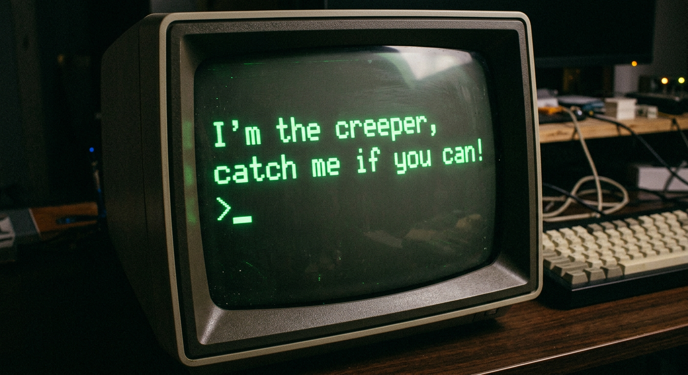

- O Creeper: Considerado o primeiro vírus de computador da história. Propagou-se pela ARPANET.
- Sintoma: Exibia a tela "I'm the creeper, catch me if you can!".
- A Solução: Criação do programa "Reaper", o primeiro antivírus, para caçá-lo.
Não era destrutivo, mas provou que um código poderia se autorreplicar pela rede, inaugurando a defesa digital.
